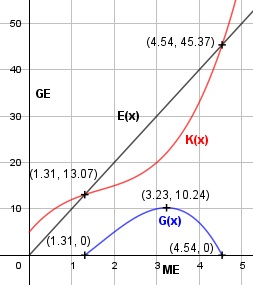
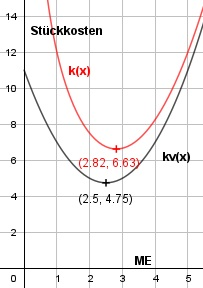

Aufgabe 83 Ein Betrieb arbeitet mit der Kostenfunktion K(x) = x3 - 5x2 + 11x + 5 und mit der Erlösfunktion E(x) = 10x. a) Wie hoch ist der maximale Gewinn? b) Bei welcher Produktionsmenge liegt das Betriebsoptimum? c) Bei welcher Produktionsmenge liegt das Betriebsminimum? a) G(x) = 10x - (x3 - 5x2 + 11x + 5) G(x) = - x3 + 5x2 - x - 5 G'(x) = - 3x2 + 10x - 1 G''(x) = - 6x + 10 - 3x2 + 10x - 1 = 0 A, B, C - Formel: A = -3, B = 10, C = -1 x1,2 = x1,2 = x1,2 = -10 ± 9,38 x1,2 = ------------- -6 x1 = 3,23 G(3,23) = - 3,233 + 5 * 3,232 - 3,23 - 5 = 10,24 x2 = 0,1 G(0,1) = - 0,13 + 5 * 0,12 - 0,1 - 5 = -5,01 --> Verlust G''(3,23) = - 6 * 3,23 + 10 < 0 --> Hochpunkt (3,23|10,24) Der Gewinn ist bei 3,23 ME am größten und beträgt 10,24 GE.

b) x3 - 5x2 + 11x + 5 5 k(x) = --------------------- = x2 - 5x + 11 + --- x x 5 k'(x) = 2x - 5 - ---- x2 10 k''(x) = 2 + ---- immer größer als 0 x3 5 2x - 5 - ---- = 0 | *x2 x2 2x3 - 5x2 - 5 = 0 Newtonsches Näherungsverfahren: Wertetabelle: x 1 2 3 4 5 k'(x) -8 -9 4 43 120 Vorzeichenwechsel zwischen 2 und 3 --> gewählt x01 = 2,7 5 2 * 2,7 - 5 2 - ------ 2,72 x1 = 2,7 - -------------------------- 10 2 + ----- 2,73 x1 = 2,7 - (-0,12) = 2,82 k''(2,82) > 0 --> Tiefpunkt (2,82|6,63) Das Betriebsoptimum liegt bei einer Produktions- menge von 2,82 ME. c) Kv(x) x3 - 5x2 + 11x kv(x) = ------ = ---------------- = x2 - 5x + 11 x x k'v'(x) = 2x - 5 2x - 5 = 0 +5 2x = 5 |:2 x = 2,5 ME, kv(2,5) = 4,75 GE k''v(x) = 2 > 0 --> Minimum bei x = 2,5 ME Das Betriebsminimum liegt bei einer Produktions- menge von 2,5 ME.